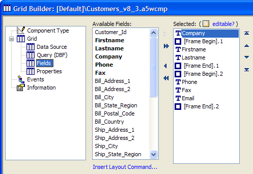
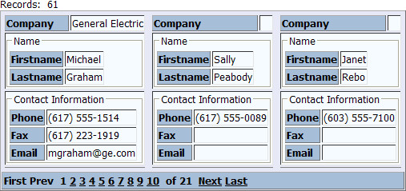
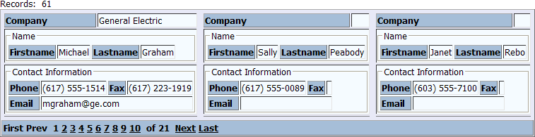
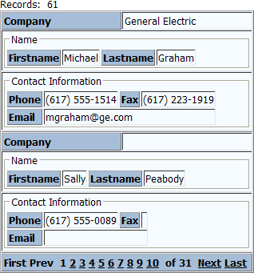
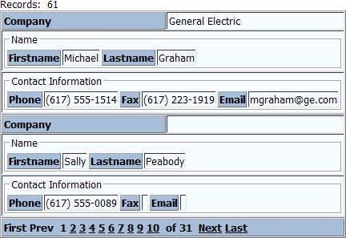

Using Frames for Control Positioning
When designing a dialog component or a grid component with columnar formatting (where the Layout Options > Number of "Layout" Columns property is greater than 1), you may position controls by placing them into frames.
A frame has a label and places a box around the selected fields. You can use the frame feature in columnar layouts, such as columnar grids, search forms, and detail view forms. This example shows a columnar grid with 2 frames. The first frame surrounds the Firstname and Lastname fields. The second frame surrounds the Phone, Fax, and Email fields.

The result of these layout commands looks like this. Each Frame Begin has a Frame Label property, where you can set its label.

When working with columnar grids like this one, another property becomes visible on the Grid > Properties page. Layout Options > Number of "Layout" Columns specifies the number of columns that you can have inside each record column. In the case above the value of Number of "Layout" Columns is 1. In the following case, the value is 2. Note how the Firstname and Lastname fields can be placed next to each other on the same row.

The next variation of this grid changes the Layout Options > Repeating Columns property from 3 to 1 and the Layout Options > Rows of Data from 3 to 2. You can see that the Firstname and Lastname fields are still next to each other on the same row.

The final variation of this grid changes the Layout Options > Number of "Layout" Columns property to 3. You can see that the Phone, Fax, and Email fields are now on the same row. Picture
{kind=link}

See Also
Using the Number of "Layout" Columns Feature
Limitations
Web publishing applications only.